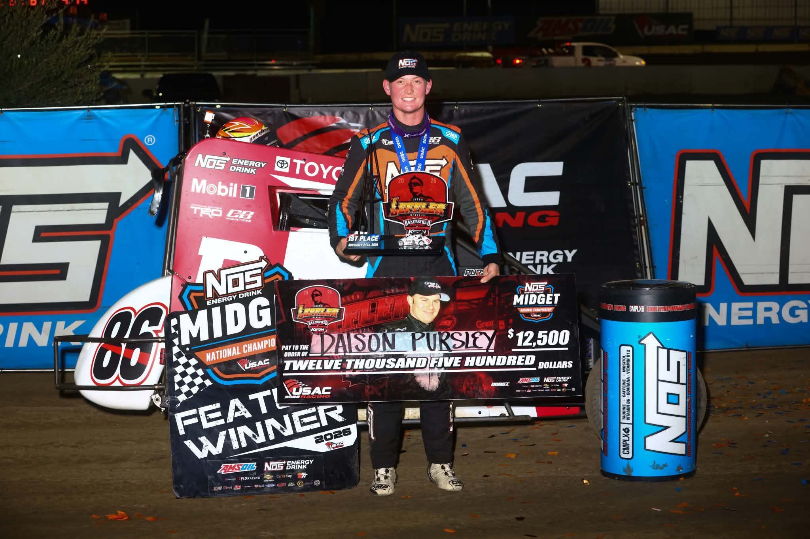

Daison Pursley Wins $12,500 Jason Leffler Memorial USAC Midget Feature at Bakersfield
Pursley started second and led laps 3 through 30 to win the 30-lap USAC National Midget feature on Tuesday, Nov. 24, at Bakersfield Speedway. Jacob Denney finished second and Justin Grant third.

Daison Pursley won the 12th Jason Leffler Memorial on Tuesday, Nov. 24, taking the 30-lap USAC NOS Energy Drink Midget National Championship feature at Bakersfield Speedway at Kevin Harvick’s Kern Raceway in Bakersfield, California, according to official USAC results. Pursley started second in the No. 86 CBI car and took the lead from polesitter Justin Grant on lap 3, pacing the final 28 circuits to earn the K & N Filters Clean Air Award. The event paid $12,500 to win, according to USAC’s event information.
Point leader Jacob Denney started third and finished second, and Grant finished third after leading the opening two laps. Corey Day started sixth and finished fourth after setting a new track qualifying record of 14.289 seconds on the 1/3-mile dirt oval, and Kevin Thomas Jr. was fifth after recording the fastest lap in Dirt Draft hot laps at 14.442 seconds, USAC reported. Kyle Larson won the opening eight-lap heat race in a track-record 1:56.058 and finished sixth in the feature, ahead of defending race champion Buddy Kofoid in seventh, Jakeb Boxell in eighth, 2013 Leffler Memorial winner Zach Daum in ninth and Gavin Miller in 10th. Plaza Park winner Jett Yantis earned Rod End Supply Hard Charger honors by advancing from 15th to 11th, while Miller and Brecken Reese won the other two heats.
Denney’s runner-up finish expanded his lead in the USAC National Midget standings heading into Saturday’s season finale, the 85th ARP Turkey Night Grand Prix at Ventura Raceway. Denney leads with 1,316 points after Bakersfield, 83 ahead of second-place Thomas Jr. (1,233) and 112 ahead of third-place Grant (1,204), according to USAC. Entering Tuesday’s race after Monday night’s makeup feature at Plaza Park, Denney had led Thomas Jr. by 77 points (1,241 to 1,164) and Grant by 105 (1,241 to 1,136). Miller sits fourth with 1,121 points and Boxell is fifth with 1,104 ahead of Ventura’s 98-lap finale, where the feature winner earns 70 points under USAC’s event format.